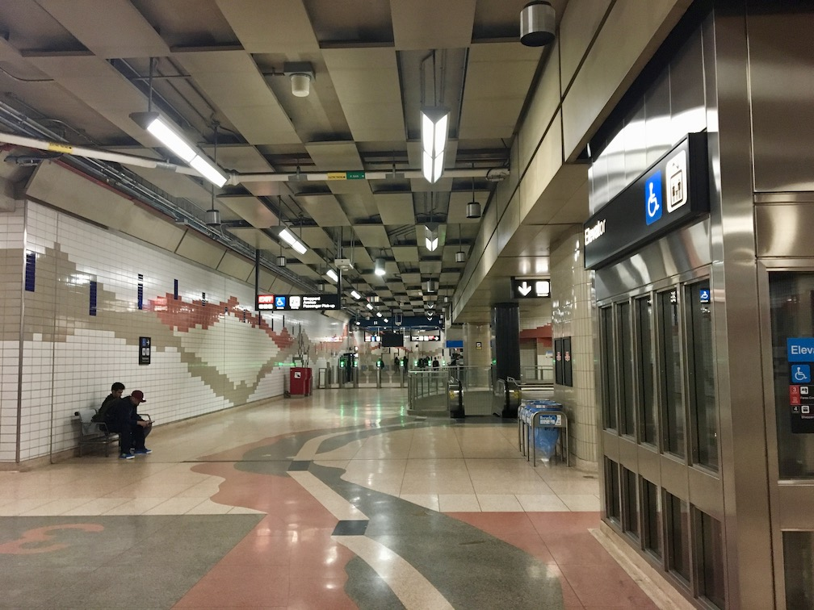
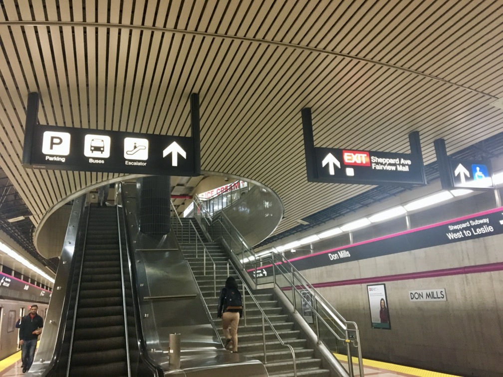

Don Mills station is the end of Line 4 and is very pink. It doesn’t show up well in photographs, but when you get off the train, it’s like looking through rose-coloured glasses: the accents are more pink than purple, and the backgrounds are more Burgundy than beige, which leads to a whole pink feeling. It’s weird, unexpected, and I kind of like it. However, besides that, Don Mills isn’t great.
The station is lonely. Like all of Line 4, it feels vastly over-designed for crowds that will probably never come. However, unlike the new TYSSE stations, which feel designed for the future, this one just feels sad.

Don Mills has a visually busy theme that does not match the actual business of the station.
Signage
Sheppard signage sucks. It’s far too complicated, and has much too much text on it. There is no concept of information hierarchy, so important instructions like where the buses are or where the subway is is buried alongside pictograms for escalators and stairs. Really, the only part that stands out are the EXITs, and even those suffer from overly long and
Starting from the subway platform, quick! Can you find the buses?

The Buses are buried in with Parking and Escalator (one of which is useless because I can see it’s an escalator). Also, all of these signs lead to the same place, so why are they separate? Unlike Highway 407, the stairs and escalator are functionally equivalent, so their signs should not be separated.
Coming to the top of the stairs, I see — wait! Isn’t that where I came from? This sign is actually for the people behind me, but it makes it look like I’ll be heading back to where I came from. Also, why is there no purple stripe? Can’t (then) brand-new signs follow their own new standard? (Also note the redundant and blurry Escalator and Stairs obscuring the more-important Subway.)
On that EXIT sign, are “Sheppard” and “Avenue” different? Because the line break would seem to say so.2
Does Don Mills station really have no way to get you to Don Mills? Why‽
Looking back at the mezzanine over the subway platform:
These signs are just inconsistent:
The sign in the foreground: why is there no EXIT? No arrow? Why, unlike the previous sign, is “Passenger Pick-up” not spelled out?
In the sign in the background, why does the purple stripe only apply to part of the sign (which actually looks pretty cool)? In the foreground sign, it applied to the whole thing. I think it is because of the direction change, but that is not clear.
Where does the elevator go? (It just says “Elevator”.)
Why does the subway pictogram blend in with all the others? It is arguably the most important pictogram in the network. I think if the background was coloured to match the stripe, it would make it much more obvious and tie the stripe to the subway, which is a win-win.
However, the new line numbers make this redunant, so in the meantime, how about sticking a Line 4 sticker over the subway pictogram? New York did this in the ‘60s when they rolled out their line roundels, and it would make navigation much more consistent.
Finally, in the bus terminal, these signs are just atrocious:
If these doors go to the same place, why are the signs not the same (or at least similar: the one on the right is semi-automatic)?
Why is the Elevator symbol separate from Access[ible]? Where is there an elevator that is not accessible?
And what got me really interested in this sign: what is up with that terrible text wrapping? What is “Mall And”? How is it separate from “Fairview”? Why not the more logical “Fairview Mall/ and/ Parking”3 or just “Fairview Mall,/ Parking”?
I think the TTC was convinced that if there was space for three lines, all three lines needed to be used, and I suppose they decided on this odd combination so that they would all be about the same length.
Oh, and again: where does that elevator go?
Epilogue
Fortunately, these signs are no longer the standard, and the new signs brought in with the TYSSE are much more – well – useful. I also like the new intermodal pictograms they’ve created with the operator’s logo and colour on top and the mode (such as bus or train) on the bottom, as can be seen at Union or Yorkdale stations. Unfortunately these were not around for the TYSSE, but I think they should be useful going forward.
Now we just have to excise these ^ from the rest of the system. It’s a pity that (excluding the newest 2014+ signs) the older a TTC sign is, the better it works.
Also, is it just me, or does the
look off-centre in its red box? I think it’s too far left. (Also, the red seems really faded compared to the TYSSE signs.) ↩
Careful, Toronto does have an Avenue Rd, but it’s not here! ↩
Also, “And” should not be capitalized. It is not a destination. ↩